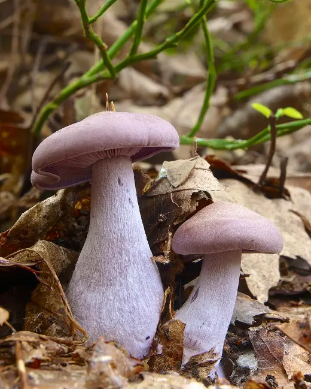

Wood blewit
Wood blewit is a wild mushroom you can forage from September to November in Eastern Norway, Southern Norway and Western Norway. Lilac to tan cap with violet gills and stem, in leaf litter and compost in late autumn; smells of orange juice.

When is wood blewit in season in Norway?
Wood blewit is usually in season September to November. Timing shifts with weather, latitude and altitude.
Where does wood blewit grow in Norway?
Wood blewit grows in Agder, Akershus, Buskerud, Innlandet, Møre og Romsdal, Oslo, Rogaland, Telemark, Vestfold, Vestland, Østfold. Regions: Eastern Norway, Southern Norway, Western Norway.
How do you recognise wood blewit?
Lilac to tan cap with violet gills and stem, in leaf litter and compost in late autumn; smells of orange juice.
How do you harvest wood blewit?
Twist or cut mushrooms at the base, brush off soil in the woods and carry them in a basket, never a plastic bag. Only take ones you're 100% sure of, leave old and very young ones, and follow local limits.
How do you eat wood blewit?
Always cooked: fried with onions or in stews.
How do you store wood blewit?
Cook and freeze.
What can be confused with wood blewit?
Webcaps (Cortinarius spp.), rated deadly. Wood blewits have a pinkish spore print and no cobweb veil. Webcaps leave a rusty brown spore print and have a cobweb-like veil when young.
What is wood blewit good for?
Protein.